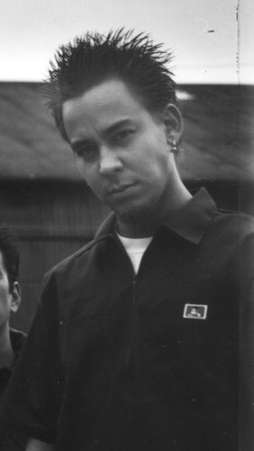

|
|
- Biography -

MIKE SHINODA
Date Of Birth : 2/11/77
INSTRUMENT: Vocals, Beats Samples, Keyboards, Guitar
GEAR:
(on stage)
- Audio Technica Wireless Mic
- Ibanez guitars
- PRS guitars
- Mesa Boogie Dual Rectifier heads
- Mesa Boogie cabinets
(studio)
- Digidesign Protools software & hardware
- Anteres software
- Waves software
- Emagic hardware
- Korg Triton keyboards
- Roland keyboard modules
- AKAI S-900 & MPC 2000 samplers
- Baldwin pianos
Born in Agoura California, Mike has a very diverse cultural background, from being half chinese to being related
to the Russian composer Peter Tchaikovsky.
Mike acts as the ringleader of this band, bringing together its members as all well as all of the various element
of the music into what its known for today. Mike took classical piano lessons for 10 years, afterwhich he moved into
jazz then hip hop, from which he now contributes to the group. Responsible for all the great rhymes that that can lyrically
hit you right in the face, he is one of the most gifted vocalists, as well as a talented pianist and guitar player.
QUOTE:
"Writing songs and sharing them with people is a very rewarding experience...I can't think of anything more gratifying
as seeing people from different backgrounds come together to enjoy music." -Mike
|